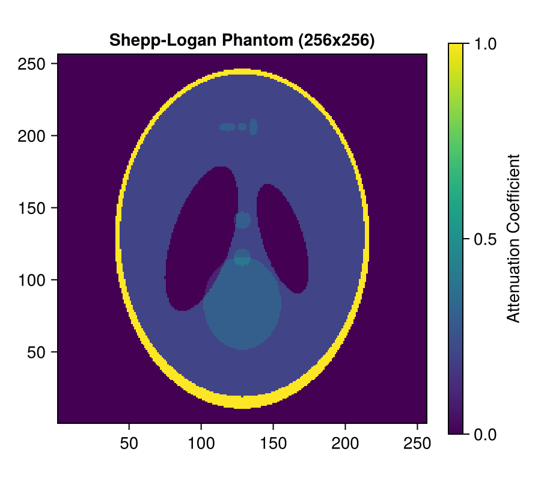
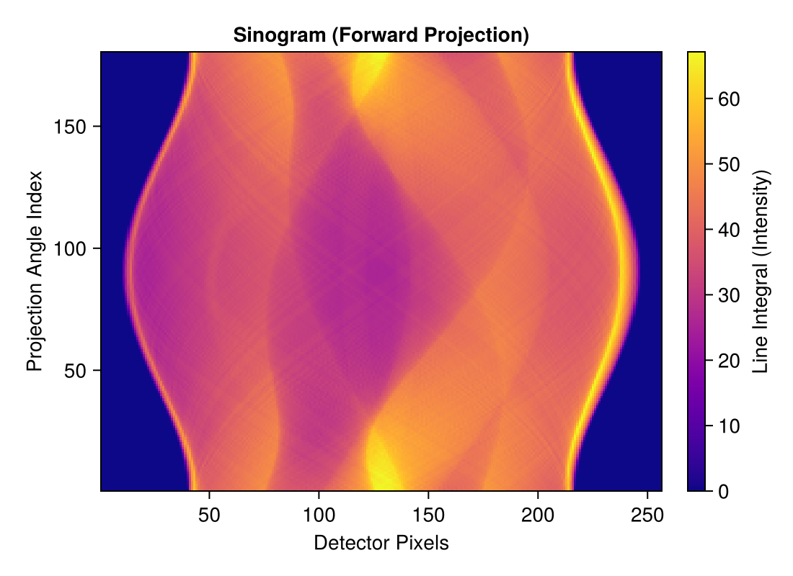
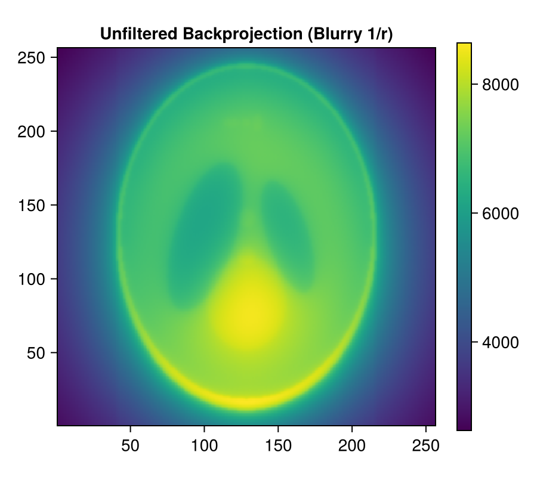
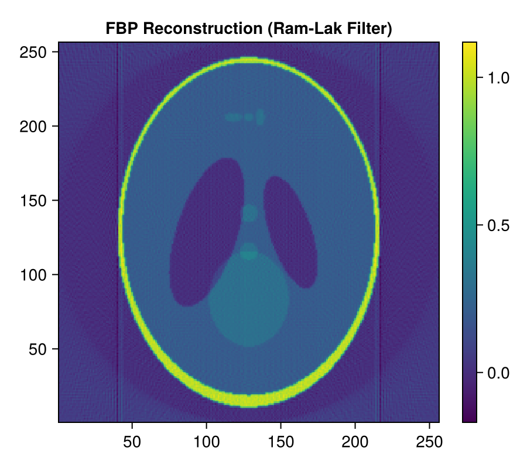
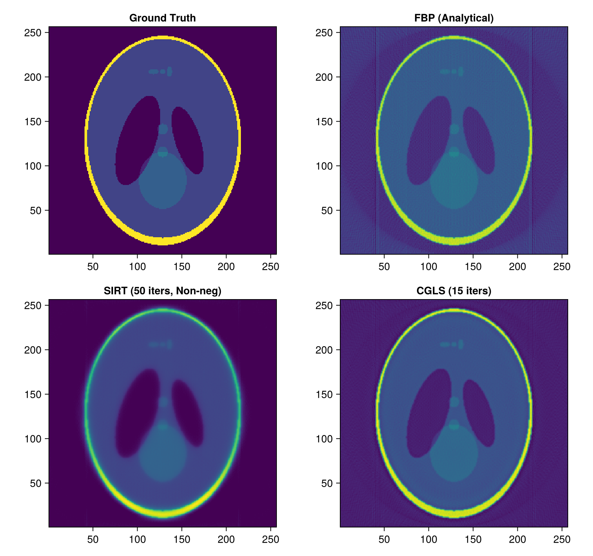
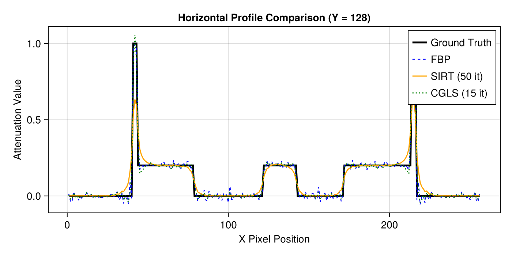

Tutorial 1: Fundamentals of 2D Parallel-Beam CT
Forward projection, backprojection, FBP, and iterative reconstruction using the Shepp-Logan phantom.
Prerequisites
This tutorial uses Makie (recommended backend: CairoMakie) for visualization. If CairoMakie is not installed in your environment, add it by running using Pkg; Pkg.add("CairoMakie").
1. Introduction
In this tutorial, you will learn the fundamental workflow of 2D parallel-beam computed tomography (CT) using AstraToolbox.jl.
Topics covered in this notebook:
- Volume Geometry: Defining the reconstruction space and generating the phantom.
- Projection Geometry: Defining rotation angles and parallel-beam detector geometry.
- Forward Projection: Simulating sinograms from attenuation images.
- Backprojection: Smearing detector readings back into image space.
- Filtered Back-Projection (FBP): The standard analytical reconstruction method.
- Iterative Reconstruction (SIRT / CGLS): Algebraic solvers for linear systems $Ax = b$.
- Visualization with Makie: Plotting sinograms, reconstructed images, and comparing line profiles.
2. Package Loading and Environment Setup
Load the necessary Julia packages:
AstraToolbox: The Julia-native port and binding for the ASTRA Toolbox.CairoMakie: High-quality 2D/3D plotting backend.LinearAlgebra: For inner products and matrix calculations.
using AstraToolbox
using CairoMakie
using LinearAlgebra
println("AstraToolbox and CairoMakie loaded successfully!")3. Defining Reconstruction Volume and Preparing the Phantom
In CT computation, we first define the geometry of the image domain to be reconstructed (Volume Geometry).
VolumeGeometry2D Arguments:
width::Int: Number of columns (horizontal pixel count).height::Int: Number of rows (vertical pixel count).window_min_x, window_max_x, window_min_y, window_max_y: Physical bounding coordinates in real space (defaults to[-width/2, width/2, -height/2, height/2], giving a pixel size of 1.0).
We also generate a standard 256×256 Shepp-Logan head phantom using shepp_logan(N).
# Define a 256x256 image volume geometry
nx, ny = 256, 256
vol_geom = VolumeGeometry2D(nx, ny)
# Generate Shepp-Logan phantom (256x256 Float32 array)
phantom = shepp_logan(nx)
# Visualize phantom
fig = Figure(size = (450, 400))
ax = Axis(fig[1, 1], title = "Shepp-Logan Phantom (256x256)", aspect = DataAspect())
hm = heatmap!(ax, phantom, colormap = :viridis)
Colorbar(fig[1, 2], hm, label = "Attenuation Coefficient")
fig
4. Defining 2D Parallel-Beam Projection Geometry (Parallel2DGeometry)
Set up the acquisition setup (Projection Geometry) where parallel X-ray beams penetrate the object.
Parallel2DGeometry Arguments:
angles::Vector{Float32}: Array of rotation angles (in radians). Here, 180 angles evenly spaced from $0$ to $\pi$ (180 degrees).detector_count::Int: Number of detector bins (pixels). Typically chosen to match or exceed the image diagonal (here 256 bins).detector_width::Float32: Physical pitch of each detector bin. Default is1.0f0(matching the image pixel width).
# Generate 180 projection angles from 0 to pi
num_angles = 180
angles = Float32.(range(0, pi, length = num_angles))
# Number of detector bins
num_detectors = 256
# Create parallel-beam geometry object
proj_geom = Parallel2DGeometry(angles, num_detectors, 1.0f0)
println("Projection geometry size: ", geom_size(proj_geom))5. Forward Projection
Forward projection computes line integrals (X-ray attenuation) across the image, producing a Sinogram.
project Function Arguments:
volume: 2D image data (Array{Float32, 2}).geometry: Projection geometry (Parallel2DGeometry, etc.).backend: Compute backend:cpu()orcuda()(defaults tocpu()).detector_supersampling: Number of sub-rays per detector bin (defaults to 1).projector_kernel: Line integral kernel on CPU (:line[default],:linear,:strip).- Returns: A 2D
Float32sinogram array of size(num_detectors, num_angles).
# Execute forward projection (uses backend = cuda() if GPU is available)
sinogram = project(phantom, proj_geom; backend = has_cuda() ? cuda() : cpu())
# Visualize sinogram
fig = Figure(size = (550, 400))
ax = Axis(fig[1, 1], title = "Sinogram (Forward Projection)",
xlabel = "Detector Pixels", ylabel = "Projection Angle Index")
hm = heatmap!(ax, sinogram, colormap = :plasma)
Colorbar(fig[1, 2], hm, label = "Line Integral (Intensity)")
fig
6. Unfiltered Backprojection
Backprojection smears detector readings back into the image space along ray paths and accumulates them.
backproject Function Arguments:
sinogram: Input sinogram array.geometry: Projection geometry.volume_size: Output image dimensions(nx, ny).backend:cpu()orcuda().
Note: Unfiltered backprojection yields an image blurred by a point spread function proportional to $1/r$.
# Perform unfiltered backprojection
unfiltered_bp = backproject(sinogram, proj_geom; volume_size = (nx, ny), backend = has_cuda() ? cuda() : cpu())
# Visualize unfiltered backprojection
fig = Figure(size = (450, 400))
ax = Axis(fig[1, 1], title = "Unfiltered Backprojection (Blurry 1/r)", aspect = DataAspect())
hm = heatmap!(ax, unfiltered_bp, colormap = :viridis)
Colorbar(fig[1, 2], hm)
fig
7. Analytical Reconstruction: Filtered Back-Projection (FBP)
To compensate for the $1/r$ blurring of unfiltered backprojection, FBP applies a high-pass ramp filter (such as the Ram-Lak filter) in the frequency domain before backprojecting.
reconstruct (FBP) Arguments:
reconstruct(sinogram, geometry, FBPMethod(); volume_size=(nx, ny))FBPMethodOptions:filter_type: Filter type (FILTER_RAMLAK[default],FILTER_SHEPPLOGAN,FILTER_COSINE,FILTER_HANN, etc.).filter_d: Cutoff frequency scaling factor (defaults to1.0f0).short_scan: Whether to apply Parker weighting for short scans (defaults tofalse).
# Perform reconstruction using FBP
rec_fbp = reconstruct(sinogram, proj_geom, FBPMethod(); volume_size = (nx, ny), backend = has_cuda() ? cuda() : cpu())
# Visualize FBP reconstruction
fig = Figure(size = (450, 400))
ax = Axis(fig[1, 1], title = "FBP Reconstruction (Ram-Lak Filter)", aspect = DataAspect())
hm = heatmap!(ax, rec_fbp, colormap = :viridis)
Colorbar(fig[1, 2], hm)
fig
8. Algebraic Iterative Reconstruction: SIRT and CGLS
While FBP is fast, it produces streak artifacts under sparse-view or high-noise conditions. In contrast, iterative methods solve the linear system $Ax = b$ via iterative optimization:
- SIRT (Simultaneous Iterative Reconstruction Technique)
- CGLS (Conjugate Gradient Least Squares)
Key Solver Arguments:
SIRTMethod:iterations::Int: Number of iterations (e.g., 50).relaxation::Float32: Relaxation parameter (default1.0f0).min_constraint: Non-negativity constraint (0.0f0; attenuation cannot be negative, which suppresses background noise significantly).
CGLSMethod:- Based on the conjugate gradient method, converging rapidly within fewer iterations (e.g., 15–20).
# SIRT reconstruction (50 iterations, non-negativity constraint >= 0.0)
rec_sirt = reconstruct(sinogram, proj_geom, SIRTMethod(iterations = 50, min_constraint = 0.0f0);
volume_size = (nx, ny), backend = has_cuda() ? cuda() : cpu())
# CGLS reconstruction (15 iterations)
rec_cgls = reconstruct(sinogram, proj_geom, CGLSMethod(iterations = 15);
volume_size = (nx, ny), backend = has_cuda() ? cuda() : cpu())
println("Iterative reconstructions finished!")9. Reconstruction Quality Comparison and Profile Evaluation
We compare the ground-truth phantom, FBP, SIRT, and CGLS side by side, and extract a horizontal line profile across the center for quantitative evaluation.
# 4-panel comparison figure
fig = Figure(size = (800, 750))
ax1 = Axis(fig[1, 1], title = "Ground Truth", aspect = DataAspect())
heatmap!(ax1, phantom, colormap = :viridis)
ax2 = Axis(fig[1, 2], title = "FBP (Analytical)", aspect = DataAspect())
heatmap!(ax2, rec_fbp, colormap = :viridis)
ax3 = Axis(fig[2, 1], title = "SIRT (50 iters, Non-neg)", aspect = DataAspect())
heatmap!(ax3, rec_sirt, colormap = :viridis)
ax4 = Axis(fig[2, 2], title = "CGLS (15 iters)", aspect = DataAspect())
heatmap!(ax4, rec_cgls, colormap = :viridis)
fig
Horizontal Profile Comparison (Y = 128)
Verify how closely each reconstruction matches the sharp edges of the ground truth.
# Extract profile along the center row (y = 128)
mid_y = nx ÷ 2
prof_true = phantom[:, mid_y]
prof_fbp = rec_fbp[:, mid_y]
prof_sirt = rec_sirt[:, mid_y]
prof_cgls = rec_cgls[:, mid_y]
fig = Figure(size = (700, 350))
ax = Axis(fig[1, 1], title = "Horizontal Profile Comparison (Y = $mid_y)",
xlabel = "X Pixel Position", ylabel = "Attenuation Value")
lines!(ax, prof_true, label = "Ground Truth", color = :black, linewidth = 2.5)
lines!(ax, prof_fbp, label = "FBP", color = :blue, linewidth = 1.2, linestyle = :dash)
lines!(ax, prof_sirt, label = "SIRT (50 it)", color = :orange, linewidth = 1.5)
lines!(ax, prof_cgls, label = "CGLS (15 it)", color = :green, linewidth = 1.5, linestyle = :dot)
axislegend(ax, position = :rt)
fig